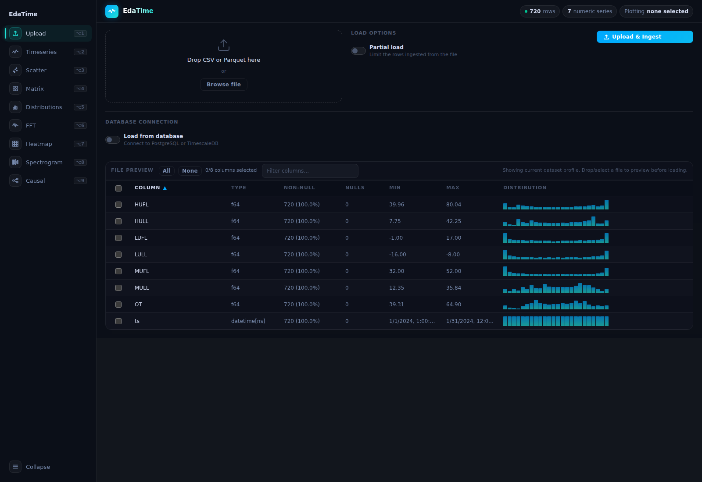
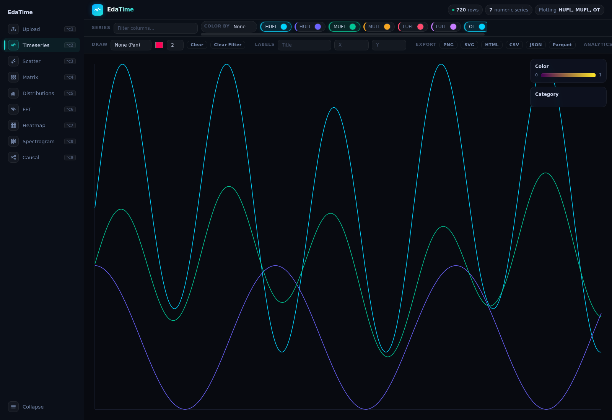
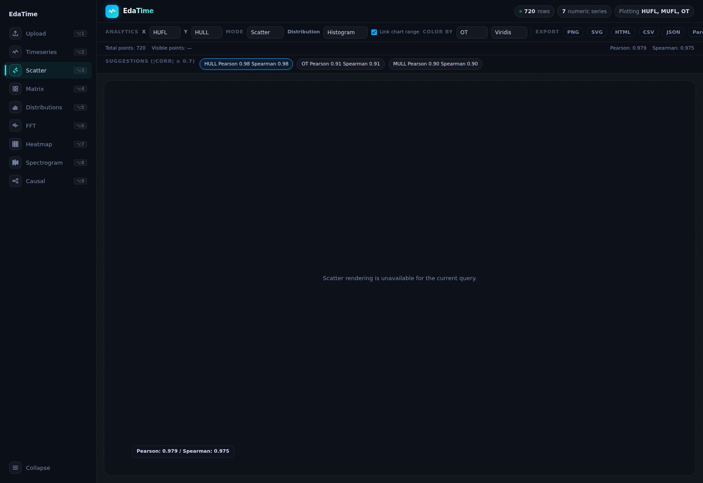
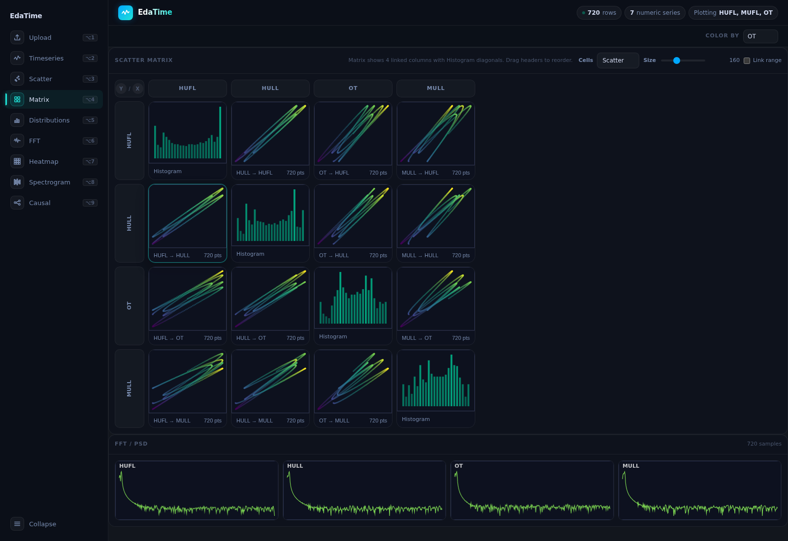
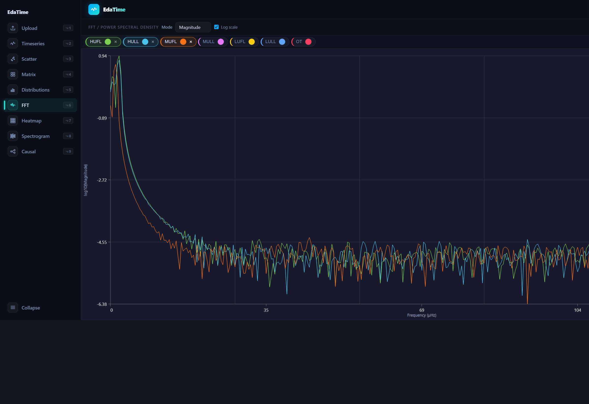
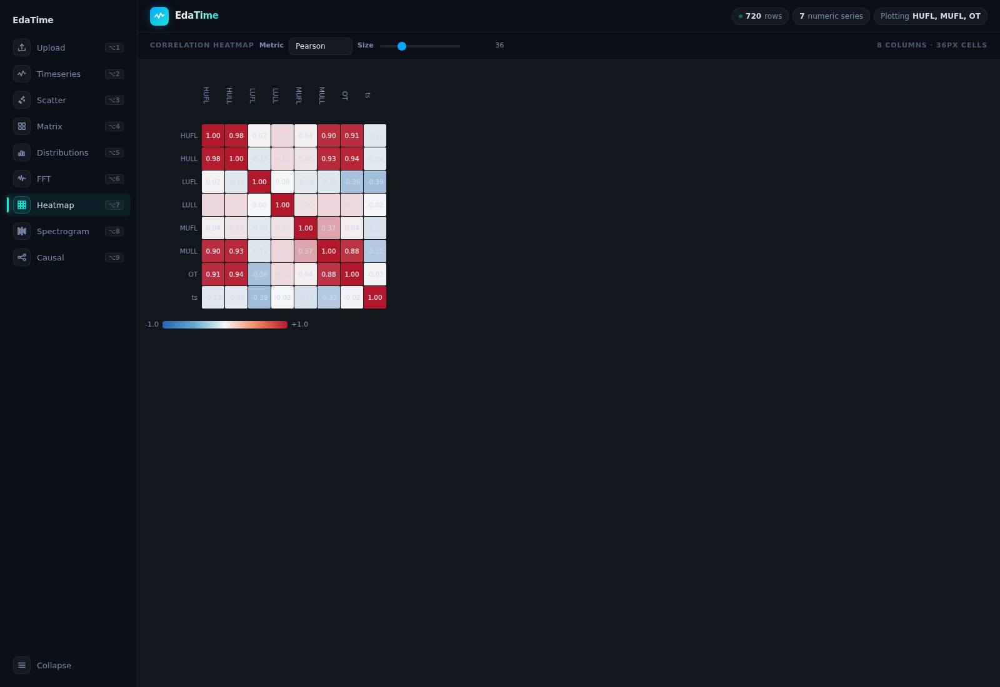
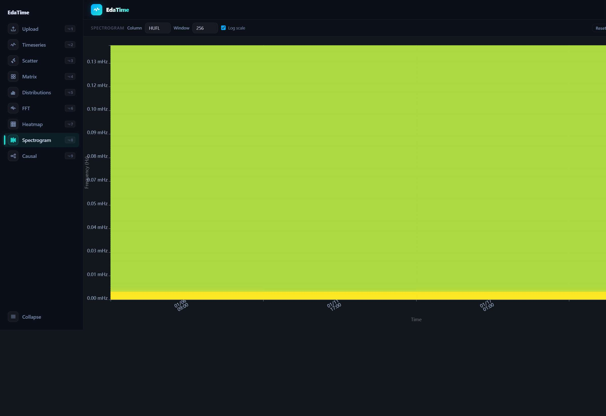
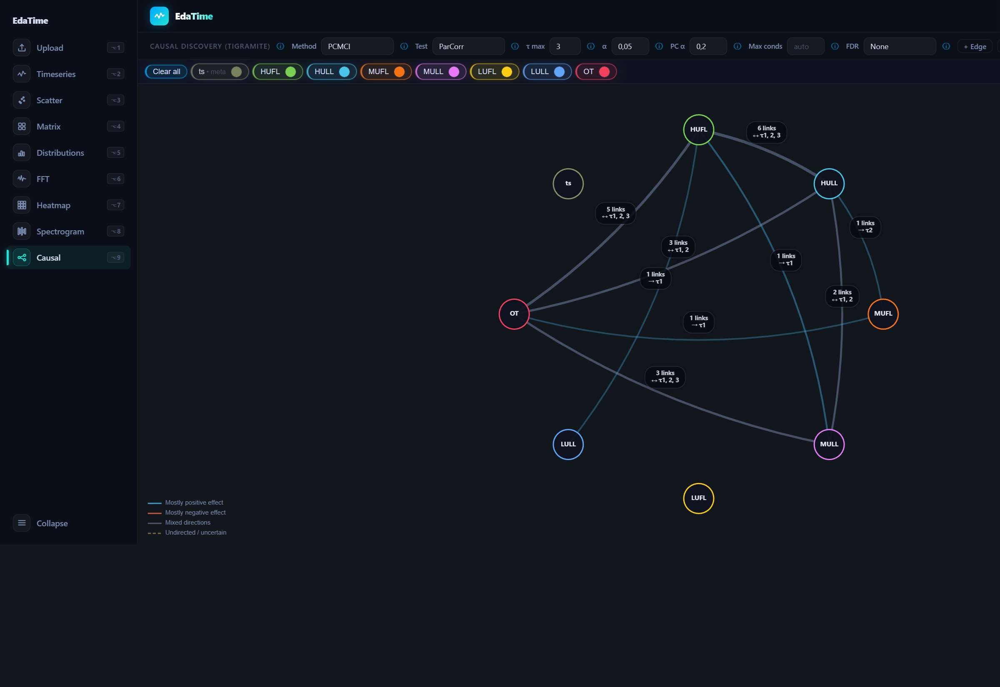

EdaTime User Manual¶
This manual combines code verification with a live walkthrough of the running app.
The feature descriptions were cross-checked against the current frontend and backend implementation.
The screenshots use a deterministic 720-row fixture with 7 numeric series so the guide remains reproducible.
Where behavior matters for debugging or later UI tests, this guide calls it out explicitly instead of smoothing over it.
What EdaTime Is For¶
EdaTime is an interactive analysis tool for time-indexed datasets. It lets you:
load CSV or Parquet files, or connect to a database
inspect column profiles before loading data
explore multiple time series at once
drill into scatter plot, scatter matrix, distribution, frequency, drift, and causal views
export filtered results and visual outputs
The app is organized as page-based workflows in the left sidebar.
Recommended First Workflow¶
If you are new to the app, this is the fastest path to understanding a dataset:
Go to Upload and confirm the detected schema and time range.
Open Timeseries and enable a few important numeric series.
Zoom into a time window of interest.
Open Scatter to compare two variables inside that same linked time range.
Switch Scatter from
PlottoMatrixwhen you want a fast pairwise scan.Use Scatter’s distribution controls, FFT, Spectrogram, Drift, or Causal when you want deeper analysis.
Upload Page¶
The Upload page supports both file-based ingest and database-backed ingest.
{kind=link}

Upload acts as both the ingest entry point and the current-dataset profile browser.¶
Load From File¶
Use the drop zone or the Browse file button to choose a CSV or Parquet file.
Available load options:
Partial load: limits how many rows are ingestedMax rows to load: upper bound for ingestion sizeSkip first N rows: useful for partial sampling or skipping warmup recordsTime range: optional start and end limits for ingestTime column: manual override if auto-detection is not enough
Click Upload & Ingest to replace the active in-memory dataset.
After ingest, the app reloads and stays on the Upload page instead of switching to another page automatically.
Load From Database¶
The same page also offers a database workflow.
Available controls include:
backend selection
connection string
schema
table or hypertable selection
optional time-column override
The live app exposed TimescaleDB and PostgreSQL in the backend selector. The database path is intended for pulling data directly into the app without an intermediate export.
SQLite is not currently implemented in the app’s database ingest path.
File Preview / Profile Grid¶
The lower half of the page shows a column profile table.
For each column, the app shows:
name
detected type
non-null count
null count
min and max
a compact distribution preview
The preview area also has:
AllandNoneselection shortcutsa filter box for narrowing the column list
sortable columns in the table header
During the live walkthrough, this panel showed the current dataset profile when no new file had been selected yet.
That distinction matters:
the table can show the already loaded dataset even when no new file is selected
the
All/Noneselection controls apply to the next upload preview, not to the currently loaded dataset in memory
Timeseries Page¶
The Timeseries page is the main exploration surface.
{kind=link}

Timeseries with several active series, per-series colors, and the full chart toolbar visible.¶
Series Toolbar¶
At the top of the page, the Series area lets you:
filter the available columns by name
enable or disable plotted numeric series
change each series color
choose an optional
Color bycolumn for the time-series plot
Each active series appears as a chip.
Chip interactions:
click the chip checkbox area to toggle the series on or off
use the color input on the chip to change that series color
Ctrl+clicka chip to set it as the adaptive-filter targetdouble right-click a chip to open its numeric filter modal
Draw And Labels¶
The main toolbar includes:
draw mode:
None,Arrow, orBoxdraw color and line width
Clearto remove drawingsClear Filterto remove adaptive line filterstitle, X label, and Y label text inputs
These label fields update the chart overlay directly.
Export¶
The Timeseries page exposes these export actions:
PNGSVGHTMLCSVJSONParquet
In practice, this gives you both visual exports and filtered-data exports.
Exports operate on the current visible or active analysis state, not on an untouched copy of the original file.
Analytics Controls¶
The right side of the toolbar contains page-level analytics controls:
Bands: rolling mean plus standard-deviation bandsWindow: rolling window sizeAnomalies: anomaly overlay toggleanomaly method:
Z-scoreorIQRanomaly threshold
Transform…Outliers…Time Dist…
Be precise about the difference between visual controls and dataset-changing actions:
Bands,Anomalies, labels, colors, drawings, and zoom are presentation or analysis-state changesTransform…andOutliers…are dataset-oriented operations and should be treated as mutations to the in-memory dataset
Transform Modal¶
Transform… opens a Column Transform dialog.
It accepts:
an expression
an output column name
The modal lists supported functions and operators, including arithmetic, logarithms, roots, exponentials, and common trigonometric functions.
Use this when you want to derive a new analytic column without leaving the app.
Outlier Removal Modal¶
Outliers… opens a Remove Outliers dialog.
Available options:
method:
Z-scoreorIQRthreshold
window size, where
0means global detection
This operation is dataset-oriented rather than just visual, so use it carefully.
Distribution Over Time Modal¶
Time Dist… opens a Distribution Over Time dialog.
You can configure:
number of windows
number of bins per window
In the live walkthrough, the modal reported the computed result as HUFL: 20 windows × 24 bins (box plot) after running Compute.
Zooming, Filtering, And Analysis Readout¶
The chart itself supports pan and zoom interactions. The linked analytics pages can reuse the current time window.
The app also maintains live readouts for:
visible time range
visible Y range
cursor position
clicked point
Scatter Page¶
The Scatter page compares two columns directly and is the main place for linked bivariate analysis.
{kind=link}

Scatter is the detailed bivariate workbench, with linked range, color-by, statistics, and export actions in one place.¶
Scatter keeps plot, matrix, and distribution analysis inside one shared workflow: axis choices, color column, linked time range, and active filters carry across those sub-views.
Primary Controls¶
The top row lets you choose:
XcolumnYcolumnrender
Mode:DensityorScatterdistribution mode:
Histogram,KDE, orBox PlotLink chart range
When Link chart range is enabled, the current time window from the Timeseries page is used in the scatter query.
If Scatter returns no points, first check the linked time range, numeric filters, and adaptive filters before assuming the X/Y pair itself is wrong.
Color And Density Controls¶
The second row adds:
Color Bycolumnscatter color scale when a color column is active
density
Binscountdensity colormap
density normalization:
LinearorLogexport menu (PNG/SVG/HTML/CSV/JSON)
During the walkthrough, switching to Scatter mode and selecting OT as the color column immediately enabled a color scale selector and rendered a numeric colorbar.
Suggestions And Stats¶
The page reports:
total points
visible points
Pearson correlation
Spearman correlation
suggested related columns above the configured correlation threshold
Suggestion buttons can be clicked to swap the Y-axis column quickly.
Export¶
The scatter view exposes:
PNGSVGHTMLCSVJSONParquet
Matrix View Inside Scatter¶
The Matrix toggle inside Scatter opens the pairwise matrix view without leaving the scatter workflow.
{kind=link}

The matrix view gives a fast pairwise scan and keeps a linked FFT panel available for the same subset of columns.¶
It renders a scatter matrix for a subset of columns and includes:
cell render mode:
ScatterorDensitymatrix cell size slider
Link rangetoggle
Important behavior confirmed during the walkthrough:
clicking any matrix cell drills back into the full Scatter page with that X/Y pair selected
the matrix also shows mini FFT launch links for the current matrix columns
This page is best used as a pairwise screening surface before detailed drill-down.
Distribution Controls Inside Scatter¶
Scatter also exposes the univariate distribution summary directly in the same workflow.
The Distribution selector in the top row changes how the marginal summaries and matrix diagonals are rendered:
HistogramKDEBox Plot
Those summaries reuse the current scatter context, including:
current X-axis column
current Y-axis column
active color column, if present
Use these controls when you want to validate whether a relationship seen in scatter is driven by skew, clipping, multimodality, or outliers before moving on to FFT, Spectrogram, Drift, or Causal.
FFT Page¶
The FFT page computes a frequency-domain view for selected series.
{kind=link}

FFT compares dominant frequency content across multiple selected series in the current dataset.¶
Controls available:
display mode:
MagnitudeorPSDLog scaleZoom outone chip per numeric column
Workflow:
Open FFT.
Click a column chip.
The app computes and renders frequency bins for that series.
Repeat for other series to compare them.
In the live walkthrough, selecting HUFL produced 4097 bins and displayed the series in the plot area.
Each selected series chip also exposes a color input and an × remove action.
Heatmap Page¶
The Heatmap page renders a correlation matrix across the available numeric and temporal columns.
{kind=link}

Heatmap gives a fast global view of which variables are worth drilling into next.¶
Controls:
correlation metric:
PearsonorSpearmanheatmap cell-size slider
The grid shows the correlation value for every pair and a color scale from -1.0 to +1.0.
During the walkthrough, switching from Pearson to Spearman updated the full matrix immediately.
Use this page for a fast global view of which columns are worth comparing in Scatter or testing in Causal.
Spectrogram Page¶
The Spectrogram page adds time-localized frequency analysis.
{kind=link}

Spectrogram reveals how frequency content changes over time instead of collapsing it into one global FFT.¶
Controls:
column selector
FFT window size selector
Log scaleReset zoomCompute
Workflow:
Select a column.
Choose a window size.
Click
Compute.
In the live walkthrough, computing the default HUFL spectrogram with a 256 window produced 255 windows × 129 bins · 32768 samples and rendered a time-frequency heatmap with a log-scaled color legend.
Use the spectrogram when a single FFT is too coarse and you need to see how frequency content changes over time.
Causal Page¶
The Causal page wraps Tigramite-based causal discovery and manual graph editing.
{kind=link}

Causal combines Tigramite configuration, node selection, graph editing, and export from one page.¶
Algorithm Controls¶
The top control strip includes:
method:
PCMCI,PCMCI+,FullCI,BivCI,LPCMCIindependence test:
ParCorr,RobustParCorr,CMI-KNN,G-squared,CMI-Symbτ maxαPC αMax condsFDR correction
Use Compute to run the selected configuration.
Graph Management¶
The page also includes:
+ Edgeto enter manual edge-add modeExport ▾Clear allone chip per node with color editing
Confirmed export options:
JSON (full graph)GLM formula (.txt)torch_geometric (.json)
Confirmed manual-edit behavior:
clicking
+ Edgeenables add-edge mode and prompts you to click two nodes to create a pair edge
The summary line reports the current graph size, including node count, pair-edge count, raw connection count, and manual/meta nodes.
Practical Tips¶
Start in Timeseries, not Scatter. The best scatter results usually come after narrowing the time window first.
Use Heatmap before Causal. It is a fast way to find candidate relationships worth testing more carefully.
Use Scatter
Matrixfor breadth and ScatterPlotfor depth.Use Scatter’s distribution controls to validate whether strong-looking plots are actually driven by outliers or skew.
Use Spectrogram when periodic behavior is not stable across the full time span.
Treat dataset-changing actions such as transforms and outlier removal as analysis steps, not just chart styling.
If the header reports
Fallback renderer active, Upload, profiling, Timeseries, and Heatmap can still be useful, but GPU-oriented pages should be rechecked in a WebGPU-capable Chrome or Edge session.
Notes From The Live Walkthrough¶
These behaviors were confirmed directly in the running app:
matrix-cell clicks drill into Scatter with the selected pair
Scatter plot, Scatter matrix, and distribution controls share context
Spectrogram requires an explicit compute step
FFT requires selecting one or more chips before a plot appears
the Upload page can act as both an ingest page and a profile browser for the current dataset
the sidebar collapse button works and is useful on dense pages